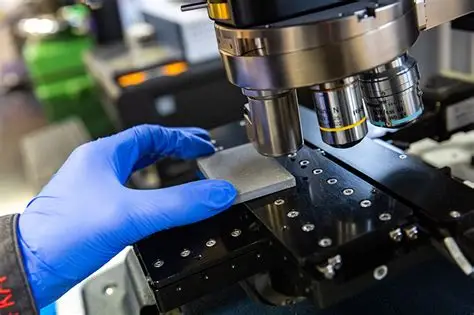

My journey has been built step by step: explore each date to learn more.
2027 – Looking toward the future
“Specializing in materials, staying open to where it leads.”
After this gap year focused on materials elaboration and characterization, I plan to return to IMT Atlantique for my final year and then go abroad for an academic exchange, to keep building my understanding of materials science in a different environment. I'm not yet fixed on a specific application sector — I want to stay open to where my curiosity leads — but I want to finish my engineering studies with hands‑on, experimental expertise I can put to demanding, practical use.

2026 – Stepping into nuclear engineering
“Turning theoretical core models into real reactor data.”
During a four‑month internship at CEA Cadarache, I worked on building a complete neutronic core scheme, using deterministic calculation codes developed in‑house. The goal was to move from the assembly stage to a complete core. What I enjoyed most was deepening my knowledge of neutronics — understanding the physics and effects at play inside a reactor core. The hardest part was getting up to speed with the code, which took real persistence.
2025 – Sharing and bringing people together
“Create, share and connect.”
Involved in the Sports Office and the student federation, I helped organize sports and charity events such as Pink October and a parasport tournament that brought together nearly 600 participants. I also managed the treasury and supported 13 student associations, allocating a total budget of €500K according to their needs and projects.

2024 – Learning in the field
“Learning by doing.”
During my first‑year internship, I worked as a mechanic in an automotive garage. I carried out maintenance operations, basic repairs, and took part in engine disassembly and reassembly. This experience made me aware of the environmental limits of certain industrial practices and strengthened my desire to improve them.

2025 – Serving close to the public
“Same commitment, different uniform.”
After moving to Nantes, I joined the operational reserve of the French Gendarmerie. Once the training was completed, I served as a brigadier‑chief supporting local units on short missions. I particularly enjoy night operations: they require adaptability, composure, and the ability to make quick decisions in sometimes unpredictable situations.

2023 – Choosing engineering
“Engineering as the logical next step.”
I joined IMT Atlantique to train in energy‑related challenges. From the first year, I developed a strong interest in thermodynamics and fluid mechanics, two fields that made me want to understand energy systems more deeply. In my second year, I specialized in nuclear energy. This track gave me a solid scientific foundation: reactor operation, fuel cycle, waste management, Monte Carlo modelling, human factors, nuclear physics. Even if I don’t necessarily see myself working strictly in the nuclear sector, this training taught me rigor, complex‑system analysis, and the importance of safety and sustainability. Today, I am drawn to the intersection between energy, materials science and more sustainable solutions. Nuclear energy was a key step, but I now aim to contribute to more responsible innovations aligned with current environmental challenges.
2021–2023 – Exploring to better understand
“Trying, adjusting, refining my direction.”
Autun — MPSI Preparatory Class
I began my higher education in an MPSI preparatory class at the military high school of Autun, combined with intensive military training (commando courses and Army training periods).
Toulouse — L2 Mechanics (Université Paul Sabatier)
I then pursued a reinforced Mechanics degree in Toulouse, where I studied electromagnetism, optics, thermodynamics, heat transfer, and the fundamentals of mechanics (solid and fluids).
Amiens — L3 Energy & Materials (UPJV)
I completed my third year in Energy and Materials in Amiens, where I studied energy issues, energy conversion, thermodynamics, heat transfer, fluid mechanics, electrical engineering as well as the basics of materials science and characterization.
This year confirmed my interest in materials, laboratory work, and the link between energy and matter.
2021 – Choosing science
“The scientific baccalaureate was my first step toward engineering.”
I earned a scientific baccalaureate with highest honors at Lycée Marie‑Curie in Nogent‑sur‑Oise, with Physics‑Chemistry, Mathematics and Engineering Sciences as specialties, along with the Advanced Mathematics option.
2018 – High school
My first encounter with engineering“This visit didn’t just show me what engineering was — it showed me I could be part of it.”
In my final year of high school, I visited the Paris Air Show with the association Elles Bougent, and it was a real turning point: by talking with passionate women engineers, I realized for the first time that engineering could genuinely be a path for me.